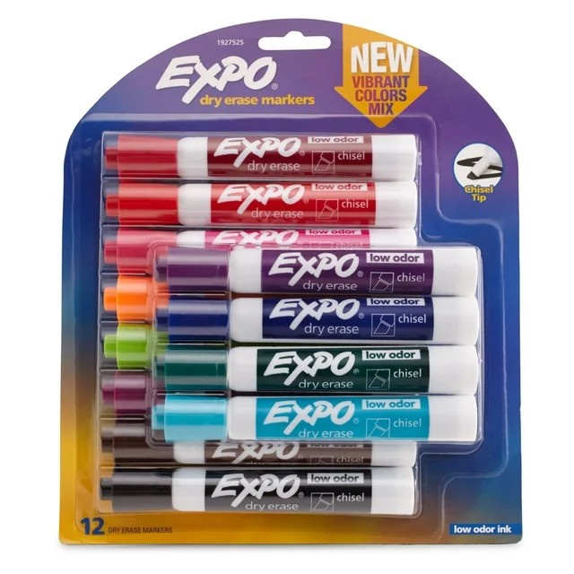
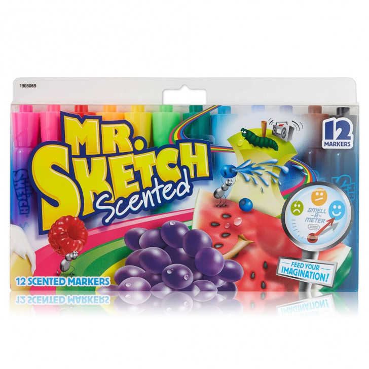
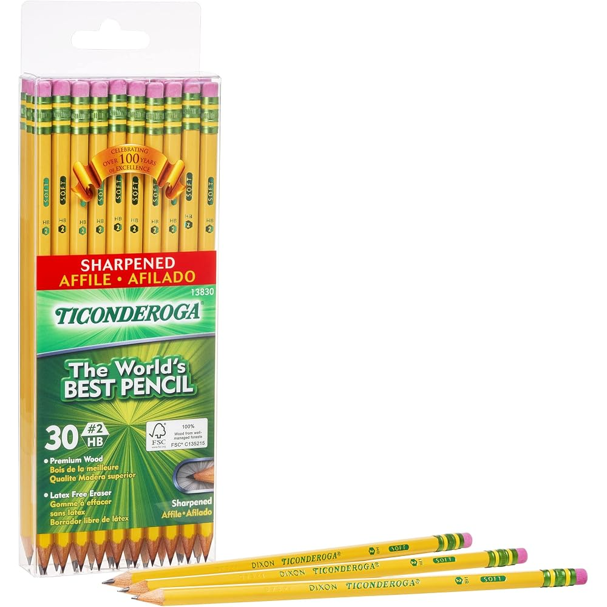
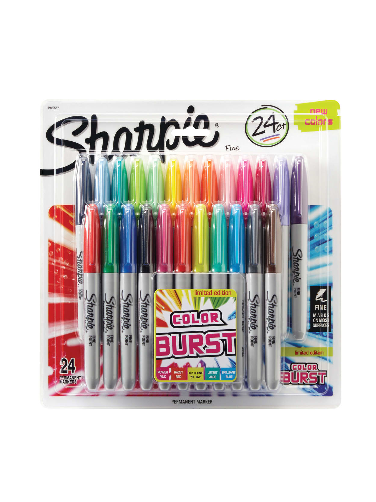
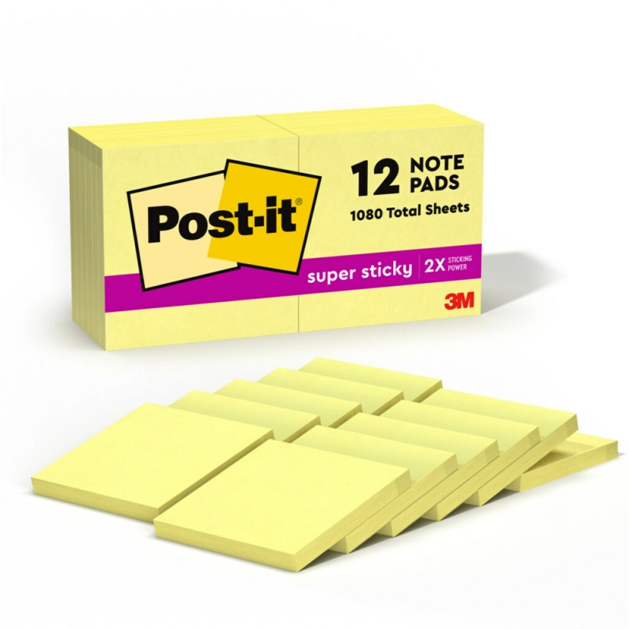
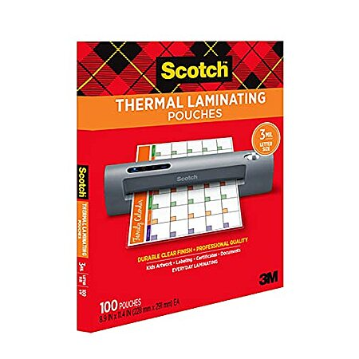
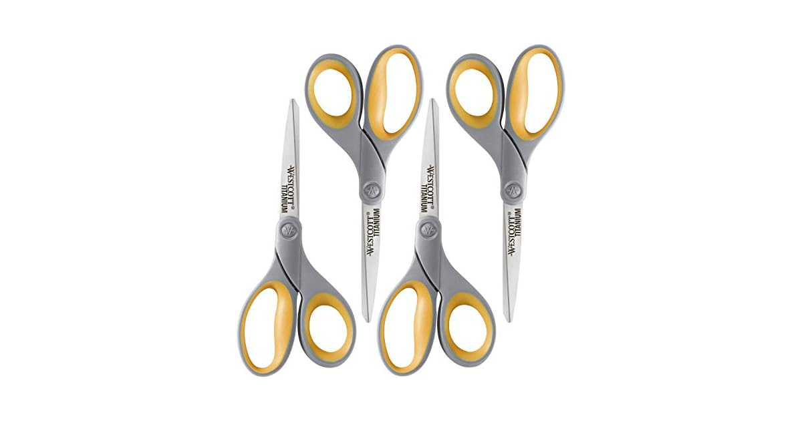
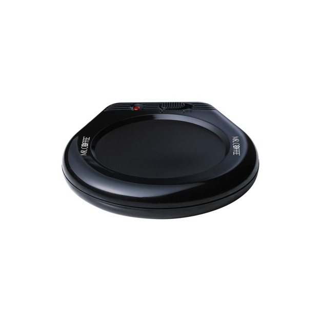
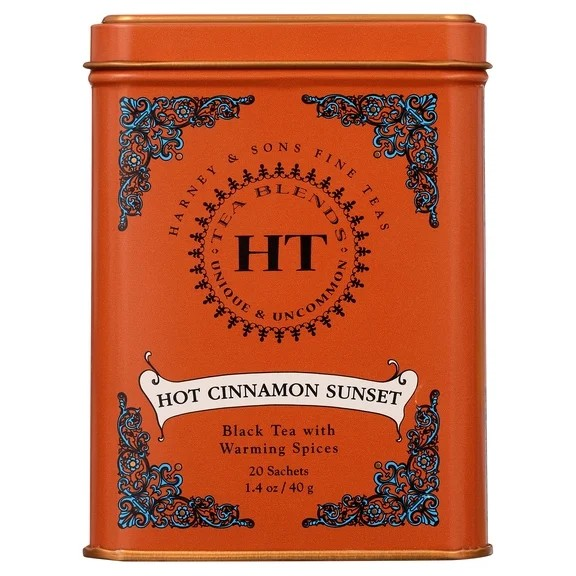

Best Gifts for Teachers Under $25: 10 Picks Teachers Actually Want
Here is the open secret of teacher gifts: teachers spend real money out of their own paychecks keeping a classroom stocked — markers, pencils, sticky notes, laminating pouches. So the gift that lands hardest is rarely the decorative one. It is the thing they were about to buy themselves, handed over in December with a note from your kid. This list is built on that logic: eight classroom workhorses from the brands teachers already swear by, plus two small comforts for the person attached to the job.
A word on prices: we deliberately print none. Amazon prices on popular supplies move daily in the run-up to Christmas, so a number printed in October would be a small lie by December. The button on each pick takes you to the live price. Shopping for the rest of the list too? The kids' guide under $25 and the stocking stuffers guide are built the same way.
How these picks were chosen
- Things teachers buy with their own money. Every supply here is a consumable that runs out mid-year. A gift that refills the drawer gets used the week it is given.
- Recognizable brands with deep review histories. EXPO, Paper Mate, Dixon, Scotch — these are the names already in the classroom, not this season's unbranded substitutes.
- No clutter, no homework. Nothing here needs personalization lead time, a subscription or shelf space in a classroom that has none. Eight picks restock the room; two are small comforts for the teacher personally.
- The note rule. Every pick is sized to ride in a gift bag with a handwritten note from your child — which, teachers will tell you, is the part they actually keep.
The supplies they buy with their own money

1. EXPO Low Odor Dry Erase Markers (12 colors, chisel tip) — the whiteboard refill
If a classroom runs on one supply, it is this one. Twelve chisel-tip markers, assorted — including the yellow EXPO brought back by popular demand — with ink that reads from the back row and erases cleanly. The chisel tip does both jobs: broad strokes for headings, a fine edge for the date and the homework box — and the low-odor ink matters in a closed room of thirty kids. A fresh pack in December replaces the gray, squeaking survivors of September.
- Pros: the exact markers teachers buy themselves; chisel tip covers headings and detail work; low-odor ink for a closed classroom.
- Cons: a cap left clicked-open overnight is a dead marker — the eternal classroom tragedy; the palest colors are hard to read from the back of a bright room.
Best for: any classroom teacher, especially elementary and middle school.
Check current price
2. Paper Mate Flair Felt Tip Pens (12 colors) — the grading pens
Flairs are the pen teachers grade, plan and annotate with — the 0.7mm felt tip writes a bold, cheerful line, and the ink is smear-resistant and will not bleed through notebook paper. The reinforced Point Guard tip resists fraying, so the twelfth pen writes like the first instead of mushing into a brush. Twelve colors mean a shade each for comments, calendar coding and the coveted "great work" star. This is the single most-requested item on teacher wish lists.
- Pros: the teacher-cult favorite for grading and planning; no bleed-through on school paper; tips hold their point far longer than cheap felt pens.
- Cons: paper-only pens — keep them far from the whiteboard; caps must click shut or felt tips dry out; heavy-handed writers will still soften a tip over a semester.
Best for: teachers who grade on paper, plan in a paper planner, or color-code everything.
Check current price
3. Mr. Sketch Scented Markers (12 pack) — the anchor-chart upgrade
Every color in this box is a fruit scent — cherry red, orange orange, the famous watermelon — and a generation of adults can still smell this paragraph. In a classroom they earn their keep on anchor charts — the chisel tip lays down big, visible lettering in three line widths — and the thick barrel suits small hands during art. Teachers keep a personal set because student markers come back caps-off and tips-pushed-in; a fresh, full-scent pack is a small luxury disguised as a supply.
- Pros: chisel tip is built for posters and anchor charts; thick barrels suit young kids' grips; the nostalgia factor is unmatched at the hand-over.
- Cons: the scents are real — check first if the classroom is fragrance-free, as some schools are; scent fades if the markers are stored caps-off or near heat.
Best for: elementary teachers, art teachers, and anyone who makes anchor charts.
Check current price
4. Ticonderoga #2 Pencils (30 count, pre-sharpened) — the good pencils
Ticonderoga's box copy calls the brand the one preferred by teachers, and the loyalty is earned — premium wood that sharpens without splintering, a graphite core that writes smoothly without snapping, and a latex-free eraser that actually erases instead of smearing pink across the page. This 30-count box arrives pre-sharpened — the real gift, teachers will tell you — ready for the lending cup and its slow, inevitable disappearance by spring. The least glamorous pick on this list, and possibly the most appreciated.
- Pros: pre-sharpened saves a teacher real time; cores resist breaking and erasers genuinely work; the brand teachers specify by name.
- Cons: thirty pencils is a few weeks' supply in a lending cup, not a semester's — abundance is the point, but set expectations; pre-sharpened tips can take a knock in a crowded pencil box.
Best for: elementary and middle-school teachers, and the classroom lending cup.
Check current priceDesk workhorses

5. Sharpie Color Burst Permanent Markers (24 colors) — the labeling arsenal
Where Flairs are for paper, Sharpies are for everything else: labeling bins, name-tagging supplies, writing on plastic, glass, wood and the laminated card that has to survive the year. This 24-pack is the Color Burst set — the classic colors plus limited-edition brights like Power Pink and Jetset Jade — in a label-friendly fine point. The ink dries fast and resists water and fading. A full rainbow restock in December is never the wrong gift.
- Pros: writes permanently on almost any classroom surface; 24 colors make color-coded bins and centers easy; quick-drying, fade- and water-resistant ink.
- Cons: permanent means permanent — it bleeds through thin paper and does not forgive a cap left off near clothing; the solvent smell is stronger than water-based pens, a consideration in scent-sensitive rooms.
Best for: teachers who label, organize and color-code — which is most of them.
Check current price
6. Post-it Super Sticky Notes (12 pads) — the classroom operating system
Exit tickets, reading conferences, small-group lists, door reminders — a classroom runs on sticky notes, and the Super Sticky version is the one that stays stuck. With twice the sticking power of the basic note, these hold on walls, windows, monitors and whiteboards instead of curling onto the floor by lunch. This box is twelve pads of the classic 3×3 Canary Yellow, 90 sheets a pad, 1,080 notes in total — a semester of reminders in one gift bag, made from responsibly sourced paper and recyclable afterward.
- Pros: genuinely stick to classroom surfaces that defeat basic notes; 1,080 sheets is a real restock, not a token; the size every teacher workflow already assumes.
- Cons: Canary Yellow only in this box — the color collections are separate packs; even Super Sticky eventually surrenders to rough cinder-block walls and steamy windows.
Best for: every teacher, full stop — the safest pick on this list.
Check current price
7. Scotch Thermal Laminating Pouches (100 pack, letter size) — make it last all year
Anything a teacher prints twice gets laminated once: center signs, flashcards, name tags, the jobs chart. These are Scotch's letter-size pouches — 100 in the box, 3 mil, sealing to an ultra-clear, photo-safe finish that makes paper marker-proof, tear-proof and spill-proof. Teachers burn through pouches fast; a full box in December carries a classroom's printing through spring.
- Pros: the genuine Scotch pouches teachers specify; crystal-clear finish that survives wiping, spills and small hands; 100-count is a semester-scale restock.
- Cons: needs a thermal laminator — nearly every school has one, but a brand-new or homeschool teacher may not; 3 mil is flexible, so for daily-abuse items some teachers prefer the sturdier 5 mil version.
Best for: elementary teachers who print and laminate their own classroom materials.
Check current price
8. Westcott Titanium-Bonded Scissors (4 pack) — the teacher's own pair, times four
Every teacher defends one good adult pair of scissors, kept in the desk. This is that pair, four times over: Westcott's 8-inch titanium-bonded blades (the bonding makes them harder and longer-lasting than plain stainless, and they resist glue and tape gunk), with soft contoured handles that work for left or right hands. Four pairs means one for every station in the room, plus a spare. Westcott has made cutting tools since 1872.
- Pros: titanium-bonded blades stay sharp and shrug off glue and tape; comfortable for left- and right-handed use; a 4-pack covers every station in the room.
- Cons: adult-size on purpose — these are the teacher's tools, not student scissors; like any blade they will dull eventually on wire or thick plastic, so keep them for paper and card.
Best for: craft-heavy classrooms, art teachers, and anyone who preps bulletin boards.
Check current priceThe break-room reset

9. Mr. Coffee Mug Warmer — for the coffee that gets interrupted
A teacher's coffee is made at 7 a.m., interrupted by a hallway question, a spill and a fire drill, and finished — cold — at 2. This simple warmer plate is the fix. Set the mug down and the 17-watt plate keeps coffee, tea or cocoa at drinking temperature; an on/off switch with indicator light and a long cord handle the rest. It fits most mug styles and wipes clean. It is not fancy, and that is the point.
- Pros: dead simple — a switch, a light, a warm mug; long cord suits real classroom desks; works for tea and cocoa drinkers too.
- Cons: it keeps a hot drink warm rather than reheating a cold one, so start with a fresh cup; no auto shut-off, so it goes on the end-of-day checklist with the lights; flat-bottom mugs make the best contact.
Best for: coffee- and tea-drinking teachers with a desk of their own.
Check current price
10. Harney & Sons Hot Cinnamon Sunset Tea (tin of 20 sachets) — the small luxury
Every list needs one thing that is purely for the person, and this is it: Harney & Sons' best-known blend, a black tea loaded with three kinds of cinnamon, orange peel and sweet cloves that somehow tastes sweet with no sugar added. It comes as 20 proper sachets in the orange HT tin, which is gift-ready as it stands and earns a second life holding paper clips in January. The cinnamon-and-clove profile is Christmas in a cup, and for the teacher who does not do coffee it is the rare drink gift that feels considered rather than generic.
- Pros: a genuinely gift-grade tin from a family tea company; naturally sweet-tasting with no sugar; sachets mean no strainer or cleanup at a desk.
- Cons: the cinnamon is assertive — a chamomile-only drinker may find it bold; it is caffeinated, so it is a morning cup, not a wind-down one; keep the lid on between cups, since the sachets share the tin rather than individual wrappers.
Best for: tea drinkers, non-coffee teachers, and anyone whose gift should feel personal rather than practical.
Check current priceShopping for everyone else too?
The teacher is one line on the list. The rest of the season's guides are built the same way: gifts for kids under $25, gifts under $25 for men, gifts under $25 for women, white elephant gifts under $25, self-care gifts under $30, and stocking stuffers under $15. Buying ahead for the big day instead? The Black Friday watchlist tracks which categories are worth holding out for until November 27.
Quick answers
Are all of these gifts really under $25?
Every pick was chosen because its usual street price sits in the under-$25 range. Amazon prices move daily, though — especially in November and December — which is why this guide prints no prices. Tap any pick to see its current price before you buy.
What do teachers actually want as gifts?
Ask a teacher and the answer is consistent: supplies they would otherwise buy with their own money, one small thing that is just for them, and a handwritten note from your kid — the note is the part that gets kept. What they are quietly long on is apple-themed mugs and random scented lotions, which is why neither appears on this list.
Is a gift card better than a physical gift?
A gift card is never wrong and always gets spent. A physical gift wins on two counts: a child can hand it over in person, which is half the moment, and it shows you thought about what a teacher's day actually looks like. The strongest move is both — a useful item from this list with a small gift card and the note tucked in the bag.
Should our class do a group gift instead?
A group gift pools small contributions into one thing with real impact — a bigger gift card, or a classroom-supply basket. Everything on this list works as the basket version: markers, pencils, sticky notes and laminating pouches are exactly what a room parent would buy. If nobody is organizing a group gift, an individual gift from this list is sized right on its own.
When should I give a teacher a Christmas gift?
Any day in the last week before winter break except the last day, which is controlled chaos. Send it in with your child in the morning, with the note attached. Ordering by early December is the safe play — the well-known brand supplies on this list are exactly what every other parent is buying at the same time.